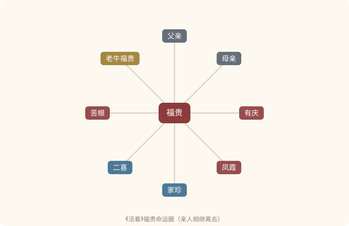

活着
| 作者 | 余华 |
|---|---|
| 成书/出版 | 1992年发表于《收获》（余华自述；单行本1993年出版，通说待核） 《活着》是我的幸运之书（余华自述，解放日报，文摘报转载）（媒体（官方）） |
| 国别/地区 | 中国 |
| 时代 | 现当代 · 当代 |
| 体裁 | 长篇小说 |
| 语言 | 汉语（白话） |

《活着》福贵命运圈（亲人相继离去）（人物关系图）
二、创作背景
创作缘起（余华自述，文摘报文）：最初以第三人称旁观者视角写作，约写一万多字后写不下去，改为第一人称、由福贵讲述自己的故事，之后'很顺利就写完了'。这一视角转换不仅是文学技巧，更是人生态度：'生活属于自己的感受，而非别人的看法'。
发表与发行：1992年发表于《收获》（时任主编巴金——文摘报文）；简体字发行量保守估计达800万册（贺仲明文章），创造当代文学作品的销售奇迹。
张艺谋1994年电影改编（葛优获戛纳影帝，通说待核）扩大了其国际影响；美国新闻界评价其为'不朽之作'（WebSearch 摘要转述海外媒体评价，待核）。
三、内容脉络
叙述框架：民歌采集者'我'在田间听老人福贵讲述一生——双层叙事结构。
福贵原是地主少爷，嗜赌成性，输光祖产气死父亲，全家沦为佃农。此后苦难接踵：为母进城请医被国民党军队抓壮丁，九死一生返乡，母亲已逝，女儿凤霞因病聋哑。
亲人相继死去：儿子有庆为县长夫人献血被抽干而死；女儿凤霞产后大出血而死；妻子家珍病故；女婿二喜工地事故惨死；外孙苦根吃豆子撑死——到最后，只有一头同样年迈的老牛'福贵'陪伴老人。
结尾：老人与老牛在阳光下犁田，唱着'少年去游荡，中年想掘藏，老年做和尚'——讲述者福贵' narration filled with happiness'（叙述充满幸福感，余华自述：文摘报文）。
四、主要人物表
| 人物 | 身份 | 说明 |
|---|---|---|
| 福贵 | 地主败家子→佃农→老人 | 中国当代文学最深入人心的形象：以隐忍消化苦难的农民 |
| 家珍 | 福贵之妻 | 米行千金不离不弃，软骨病中撑起全家 |
| 有庆 | 福贵之子 | 为县长夫人献血被抽干而死——最刺痛的一笔 |
| 凤霞 | 福贵之女 | 聋哑，嫁二喜后死于生产 |
| 二喜 | 偏头女婿 | 工地水泥板事故惨死 |
| 苦根 | 外孙 | 吃豆子撑死——贫穷的荒诞结局 |
| 春生/龙二 | 战友/赢走家产的赌徒 | 命运的镜像：龙二被枪毙、春生文革自尽 |
五、主题与艺术特点
- 活着本身的意义：人不是为活着之外的任何事物而活着，而是为活着本身而活着（其韩文版自序大意，待核）——去目的化的生命哲学。
- 苦难叙事的视角转换：旁观者看福贵'一生除了苦难就是苦难'，福贵自己讲述却'充满幸福感'（余华自述：文摘报文）——'苦难是别人的看法'。
- 温情与残忍并置：亲人一个接一个死去，而每次死亡前后都有真挚的爱与体面——'月光照在路上，像是撒满了盐'（余华引名句，文摘报文）。
- 历史与个人：内战、大跃进、文革作为背景自然流入个人命运——时代苦难被个人化为'命运'。
六、影响与评论
- 贺仲明：简体字发行量保守估计达800万册，创造当代作品销售奇迹；几乎所有当代文学史教材都给予重要位置和较高评价。
在融合和创新中迈向经典——重读《活着》并论余华的文学史意义（扬子江文学评论，刊中国作家网）（官方文学机构） - 贺仲明：凭借《活着》，余华足以在新文学史上奠定经典作家地位；与赵树理、路遥并列为纯文学赢得大众读者的三个案例。
在融合和创新中迈向经典——重读《活着》并论余华的文学史意义（扬子江文学评论，刊中国作家网）（官方文学机构） - 余华自述（文摘报文）：1992年《收获》发表；第三人称到第一人称的转换是'文学技巧更是人生态度'；称其为'我的幸运之书'。
《活着》是我的幸运之书（余华自述，解放日报，文摘报转载）（媒体（官方）） - 电影改编（张艺谋1994）获戛纳评审团大奖与影帝（通说待核），使《活着》成为国际认知度最高的中国小说之一。
在融合和创新中迈向经典——重读《活着》并论余华的文学史意义（扬子江文学评论，刊中国作家网）（官方文学机构）
七、阅读建议
难点
- 篇幅不长（约12万字）而情感密度极大，死亡接连出现，情绪冲击强烈——需要心理准备。
- 双层叙事（'我'听福贵讲）中的视角切换是艺术关键，初读易忽略。
- 历史事件（抓壮丁、大跃进、文革）不做正面描写而藏于细节，需要一点当代史知识。
- 作家出版社《活着》（1993初版通行本）：标准读本。
- 南海出版公司/北京十月文艺《活着》（新版）：市场通行版。
- 英译 To Live（Michael Berry 译，2003，通说待核）与电影对照阅读极佳。
一两个晚上通读 → 回读开篇（'我'与福贵的相遇）与结尾（老人与牛）体会框架设计 → 对照余华自序（各版本序言）理解'活着'的哲学 → 有兴趣再看张艺谋电影比较结局改动。
八、待核实
- 《收获》1992年第6期发表与单行本（1993年长江文艺出版社说）细节待核。
- 韩文版自序'人是为活着本身而活着'原文出处待核。
- 电影获奖（1994戛纳评审团大奖、葛优影帝）信息待核。
- 海外媒体'不朽之作'评价的具体出处（WebSearch 摘要转述）待核。
本页主要来源
余华的其他收录作品：活着